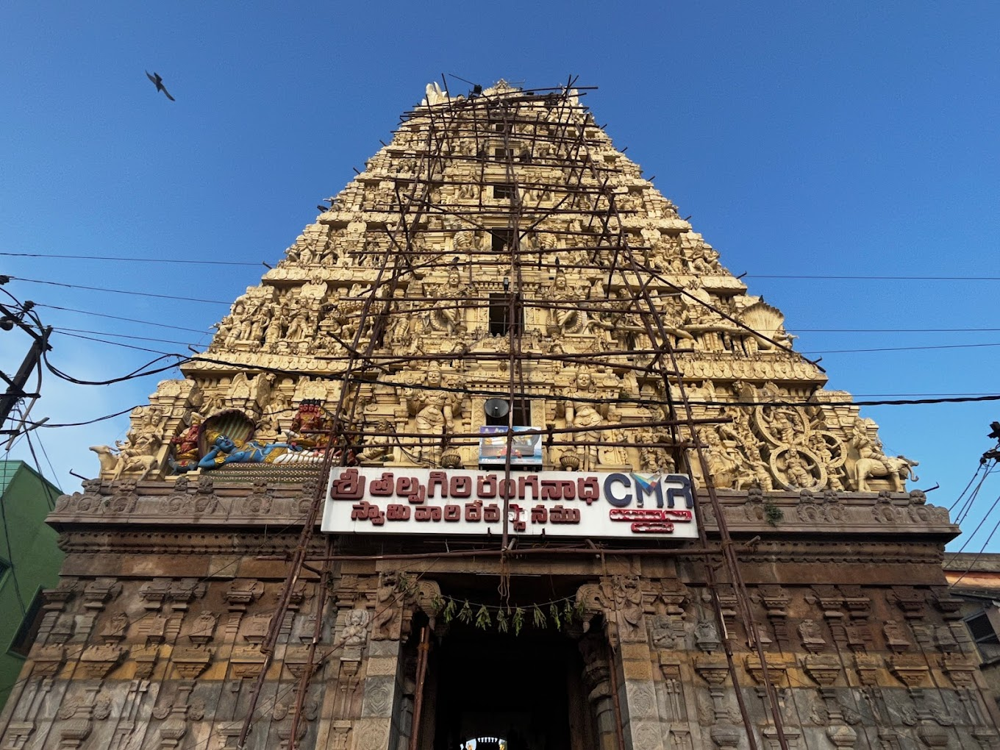

Ranganadha Swamy Temple

Temple Name: Sri Thalpagiri Ranganadha Swamy Temple
History: The Sri Talpagiri Ranganathaswamy Temple in Nellore, Andhra Pradesh, is believed to have been built in the 12th century on the banks of the Penna River. Stone inscriptions in the temple indicate that the main shrine and extensions were constructed by Chola kings between 1178 and 1216, while the earlier parts of the temple were built by Pallava kings in the 7th and 8th centuries.
Maps